Lecture 4: First Quantum Algorithm#
Warning
These lecture notes are a work in progress and are not a replacement for watching the lecture video, it’s intended to be a supplementary reading after watching the lecture.
Algorithm: Definition#
Algorithm
An algorithm is a set of instructions that solves a given problem.
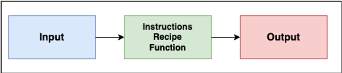
Fig. 11 Algorithm diagram.#
A classical algorithm is based on binary operations or the moving around of bits (0’s and 1’s).
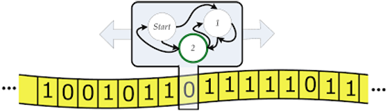
Fig. 12 Algorithm binary representation.#
A classical algorithm is always run on classical hardware.
Quantum Algorithm: Definition#
Quantum Algorithm
A quantum algorithm is an algorithm that leverages quantum mechanics in terms of design and/or hardware.
Attention
Some algorithms are designed leveraging quantum mechanical properties, but run in a classical hardware.
Its basic unit of information is the qubit. It exhibits the following properties:
Superposition: A qubit can be in combination of \(\ket{0}\) and \(\ket{1}\) states.
Entanglement: Qubits can be correlated in ways that have no classical equivalent. Measuring the state of one qubit instantely tells us something about another.
Interference: A quantum algorithm can be designed so that the “wrong” answers interfere destructively and the right answers interfere constructively.
Superposition, Entanglement, Interference#
Superposition
Superposition
The qubit is in both states at once — measuring gives 0 or 1, each with probability 1/2.
Entanglement
Entanglement
Measuring qubit 1 instantly fixes qubit 2’s outcome.
Interference
Interference
The \(\ket{1}\) amplitudes cancel (destructive), the \(\ket{0}\) amplitudes add (constructive).
Classical vs Quantum Algorithms#
1. Basic unit of information#
Classical: Works with bits. Each bit is definitely either 0 or 1 at every point in time.
Quantum: Works with qubits. Qubits can show superposition, entanglement and interference.
2. How states are processed#
Classical: to check N possibilities, a classical computer generally has to look at them one at time.
Quantum: N qubits in superposition represent all \(2^{N}\) combinations of states simultaneously.
Attention
Even if quantum algorithms work with a superposition of states, measuring collapses the system to one result.
3. Gates#
Classical: Classical gates implement boolean logic functions on bitstrings.
Quantum: Quantum gates implement linear transformations (represented by unitary matrices) on state vectors.
4. Reversibility#
Classical: most classical logic gates are irreversible. We can’t uniquely reconstruct the input from its output.
Quantum: quantum gates must be reversible. This means they can always be run backward.
Attention
Reversibility of quantum gates is a hard mathematical constraint on how quantum circuits are built.
5. Algorithm output#
Classical: Measurement is deterministic. We run the classical algorithm once, we get a definite answer.
Quantum: Measurement is probabilistic. A quantum algorithm is run several times to get the desired result.
6. Mathematical foundations#
Classical: Based on boolean algebra and discrete math. Bitstrings are transformed by logical operations.
Quantum: Based on linear algebra over Hilbert spaces. Statevectors are transformed by unitary matrices.
Attention
Any classical algorithm can be represented and executed on a quantum computer.
Computational Complexity#
Computational complexity is the study of time and space resources required to solve computational problems.
The big-O notation (\(O\)) is used to study the worst-case behaviour of specific algorithms.
\(f(n)\) is in the class of functions \(O(g(n))\) means:
Big-O Notation
There exists constants \(c\) and \(n_0\) such that for all \(n>n_0\rightarrow f(n)<cg(n)\)
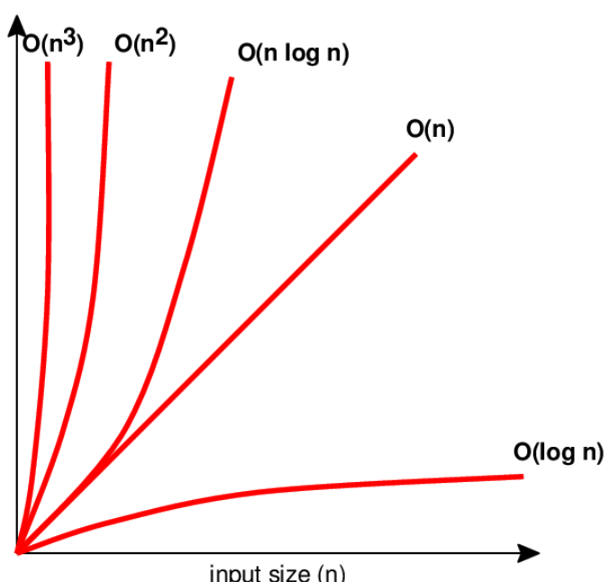
Fig. 13 Growth of common complexity classes.#
A simple sorting algorithm (e.g. bubble sort) is a good example of computing an algorithm’s complexity.

Fig. 14 Bubble sort algorithm animation. Source: commons.wikipedia.org#
The bubble sort is a simple (and inefficient) sorting algorithm.
It steps through the list element by element, comparing adjacent elements and swapping their values if the order is not right.
This means it has to do \((N-1) + (N-2) + \dots + 2 + 1 = \frac{N(N-1)}{2}=\frac{1}{2}(N^{2}-N)\) swaps in the worst case.
Attention
For large \(N\), the \(N^2\) term dominates, so bubble sort is said to have \(O(N^2)\) complexity.
Circuits#
In theoretical computer science a circuit is a model of computation in which input values go through a sequence of gates, each of which computes a function.
Classical (quantum) algorithms can be implemented using complex sequences of classical (quantum) circuits.
Circuits can be thought as an ordered sequence of operations, where each individual operation is a gate.
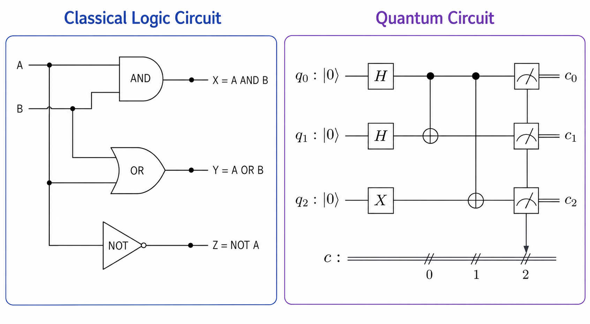
Fig. 15 Example of classical and quantum circuits.#
Classical and Quantum Circuits: Differences and Similarities#
1. Similarity: Gate ordering#
Both are partially ordered sequences of gates: independent gates can be reordered or run in parallel.
2. Difference: Gate timing#
Classical: Gate execution times are essentially uniform across gate types.
Quantum: Gate execution times are not uniform. Different gates take different amounts of time to implement on real hardware.
3. Difference: Circuit depth#
Classical: Circuit depth is not as important as classical bits don’t suffer from decoherence.
Quantum: Depth is critical, since qubits have a limited lifetime due to decoherence.
Quantum Circuits#
In a quantum circuit, wires represent qubits and gates represent operations on these qubits.
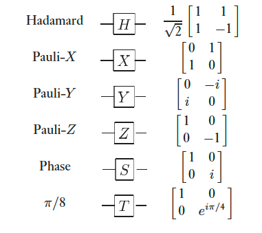
Fig. 16 Names, symbols and unitary matrices for common single qubit gates.#
Unless stated otherwise, qubits in a circuit are initialised to \(\ket{0}\) state.
Circuits are read left to right. Gates to the left are applied first.
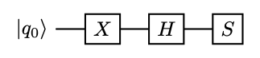
Fig. 17 Quantum circuit example.#
Multi-Qubit Circuits#
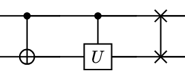
Fig. 18 Common two-qubit gates: CNOT, general controlled-U and SWAP gate.#
Multi-qubit states in circuits are usually written as \(\ket{q_0q_1\dots q_{n-1}}\) (big-endian ordering).
Attention
Some SDKs like Qiskit use little-endian ordering, which means that multi-qubit states are written as \(\ket{q_{n-1}\dots q_1\dots q_{0}}\). In all cases, however, \(q_0\) will be at the top when drawing the circuit.
{kind=link}
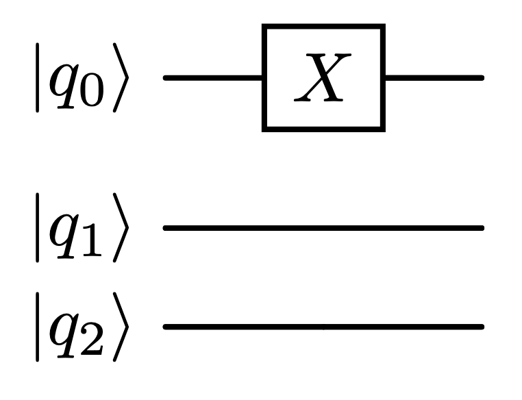
Fig. 19 Quantum circuit example to show big-endian little-endian differences.#
Attention
The state of the circuit above would be \(\ket{001}\) in little-endian ordering and \(\ket{100}\) in big-endian ordering.
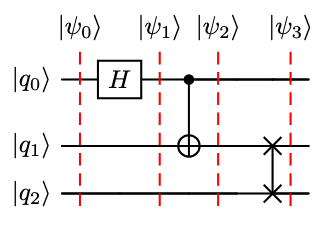
Fig. 20 3 qubit quantum circuit example.#
Measurement#
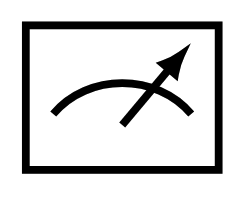
Fig. 21 Computational basis measurement symbol.#
Attention
Even if measurement is drawn as a quantum gate, it is not. Measurement is not unitary. It is probabilistic and irreversible.
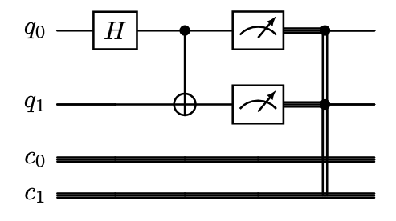
Fig. 22 Example of measurement with classical registers.#
The outcomes of measurements are written into a classical bit in the classical register.
Classical registers enable conditional operations after mid-circuit measurements, applying quantum gates conditioned to the values in the classical register.
Attention
Sometimes all classical registers are drawn using just one double wire, or even not drawn at all.
Classical Circuit Example: The Half Adder#
The half adder is an example of a binary logical classical circuit.
It takes two 1-bit inputs and produces:
SUM: A XOR B.
CARRY: A AND B.
It is called “half” adder because it doesn’t account for a carry-in from previous stage.
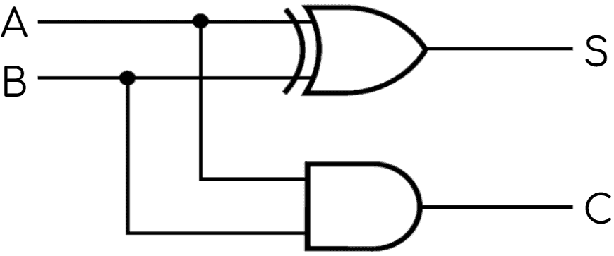
Fig. 23 Half adder circuit.#
A |
B |
Sum |
Carry |
|---|---|---|---|
0 |
0 |
0 |
0 |
0 |
1 |
1 |
0 |
1 |
0 |
1 |
0 |
1 |
1 |
0 |
1 |
Half Adder
When we run an algorithm on a classical computer, it is made of a lot of logical circuits like the half-adder.
Quantum Circuit Example: The Half Adder#
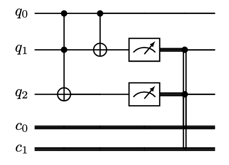
Fig. 24 Half adder quantum circuit.#
The Toffoli gate computes the carry operation, \(q_2 = A \cdot B\).
The CNOT gate computes the sum, \(q_1 = A \oplus B\).
Measuring \(q_1\), \(q_2\) reads out the sum and carry into the classical register.
Attention
This is just classical logic embedded reversibly into unitary gates, no superposition or interference is used. There’s no quantum speedup: it needs an extra ancilla qubit and offers no efficiency gain over a classical half adder.
Deutsch Problem#
{kind=link}
Fig. 25 David Deutsch.#
Given a black box \(f : \{0,1\} \rightarrow \{0,1\}\)
Uses an oracle to determine if \(f\) is constant or balanced.
{kind=link}
Fig. 26 Oracle.#
Classically -> 2 queries.
Deutsch algorithm -> 1 query.
Early demonstration of QC power (1985).
Quantum Parallelism#
Quantum Parallelism
Quantum parallelism allows quantum computers to evaluate a function f(x) for different values of x simultaneously.
For a binary function, it is possible to build a gate \(U_f\) that performs the transformation:
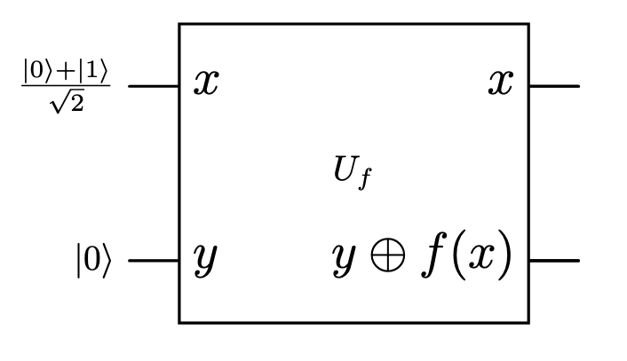
Fig. 27 Parallelism oracle example.#
Input state: \(\ket{\psi_0}=\frac{1}{\sqrt{2}}(\ket{0,0}+\ket{1,0})\)
Attention
\(f(0)\), \(f(1)\) are evaluated simultaneously! But only one value is accessed per measurement.
Oracle#
For a 1-bit function there are only 4 possible oracles.
Constant f#
{kind=link}
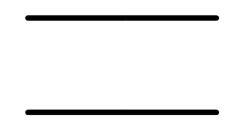
Fig. 28 \(f(x)=0\)#
{kind=link}
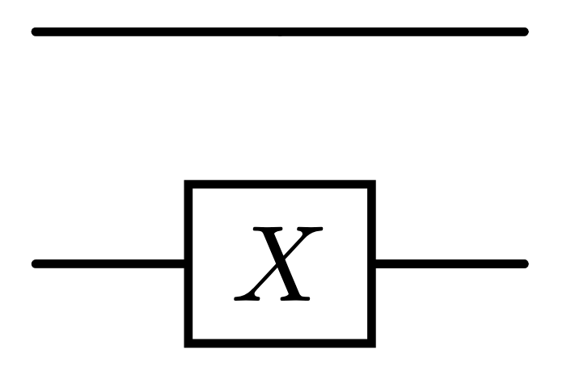
Fig. 29 \(f(x)=1\)#
Balanced f#
{kind=link}
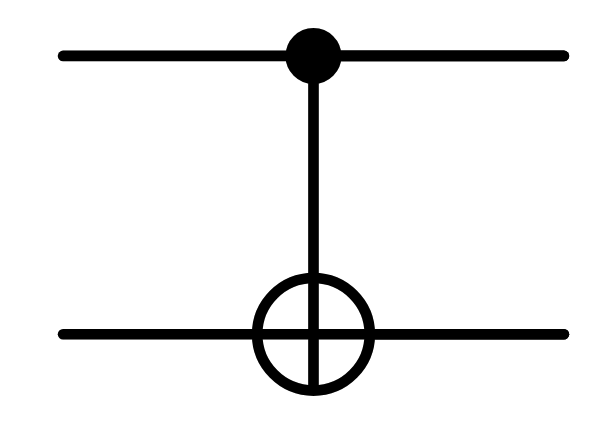
Fig. 30 \(f(x)=x\)#
{kind=link}
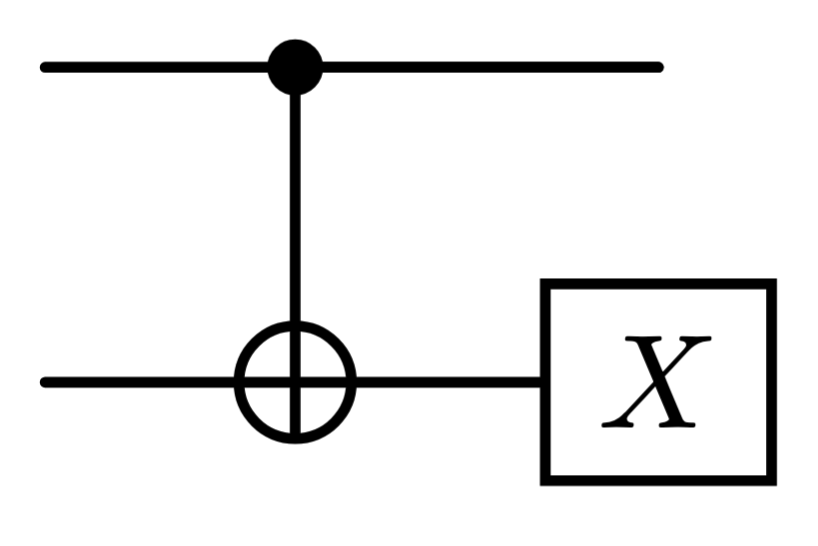
Fig. 31 \(f(x)=1-x\)#
Deutsch Algorithm#
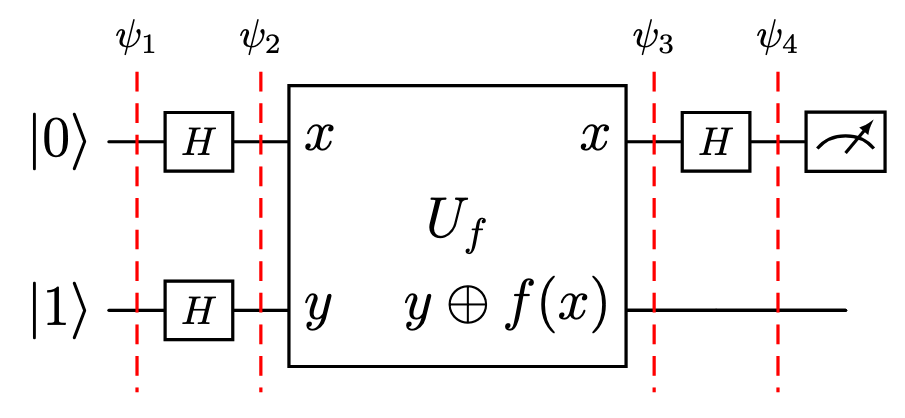
Fig. 32 Deutsch Algorithm.#
Initial state.
Superposition generated using Hadamard gates.
Evaluate values f(x) using the oracle (parallelism).
Interference between states.
Deutsch Algorithm
Solves the problem in just one measurement!
Note
In order to get the state \(\ket{\psi_3}\), we used the fact that \(U_f\left[\ket{x}\left(\frac{\ket{0}-\ket{1}}{\sqrt{2}}\right)\right] = (-1)^{f(x)}\ket{x}\left(\frac{\ket{0}-\ket{1}}{\sqrt{2}}\right)\). Let’s see why:
Deutsch-Jozsa Algorithm#
If \(f\) is n-bit:
Deutsch-Jozsa algorithm (1992) -> 1 query.
Classically -> Can be up to \(2^{n-1}+1\) queries.
{kind=link}
Fig. 33 Richard Jozsa.#
Looks like a big improvement but…
Deutsch problem has no known practical applications.
The method evaluating the function it’s different between the classical and quantum case.
If we use a classical probabilistic algorithm, we can drastically reduce the number of queries needed to solve the problem with high confidence.
Classical Programs#
Classical Program
A classical computer program is a set of instructions in a programming language for a classical computer to execute.
One can think of a classical computer program as a concrete implementation of a classical algorithm.
random_integer.py
import numpy as np
import matplotlib.pyplot as plt
samples = np.random.randint(16, size=1000)
values, counts = np.unique(samples, return_counts=True)
plt.bar(values, counts)
plt.xlabel("Value")
plt.ylabel("Count")
plt.show()
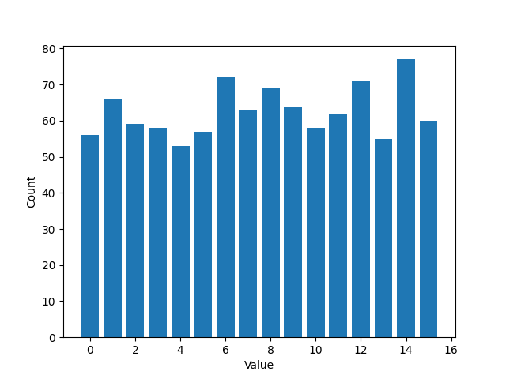
Fig. 34 Output of random_integer.py.#
Quantum Programs#
Quantum Program
A quantum program is a set of instructions in a programming language for a quantum computation.
Attention
A quantum program can be executed on a quantum computer or simulated in a quantum simulator.
Attention
A quantum program may be composed of one or more quantum circuits.
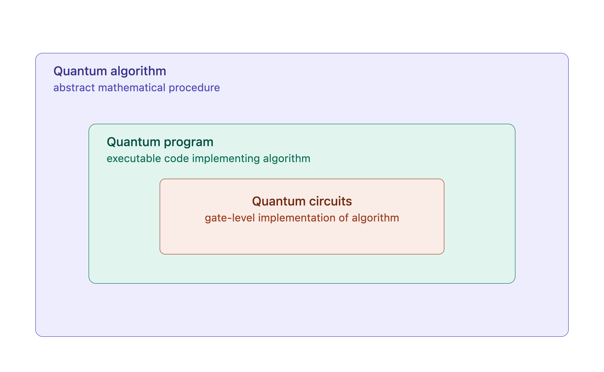
Fig. 35 Quantum algorithm, program and circuit hierarchy.#
random_integer_quantum.py
import matplotlib.pyplot as plt
from qiskit import QuantumCircuit
from qiskit_aer import AerSimulator
qc = QuantumCircuit(4, 4)
qc.h(range(4))
qc.measure(range(4), range(4))
counts = AerSimulator().run(qc, shots=1000).result().get_counts()
values = [int(bitstring, 2) for bitstring in counts]
weights = list(counts.values())
plt.bar(values, weights)
plt.xlabel("Value")
plt.ylabel("Count")
plt.show()
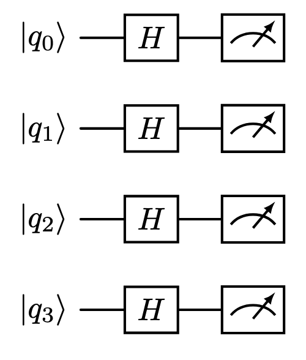
Fig. 36 Circuit of random_integer_quantum.py.#
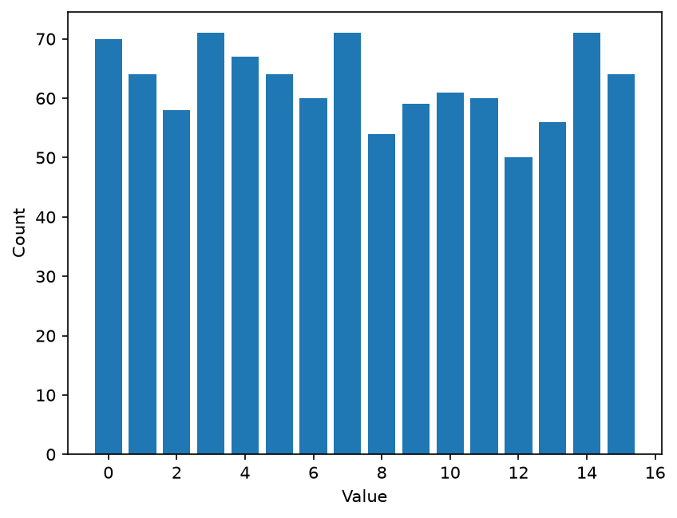
Fig. 37 Output of random_integer_quantum.py.#
Quantum Simulators#
Quantum Simulator
A quantum simulator is a system that reproduces the behaviour of a quantum computer.
Running algorithms on real hardware is very expensive.
Using quantum simulators allows us to look for bugs, prototype algorithms or do resource estimation before sending them to a real device.
The number of amplitudes grows as \(2^n\), so simulating larger systems gets exponentially harder.
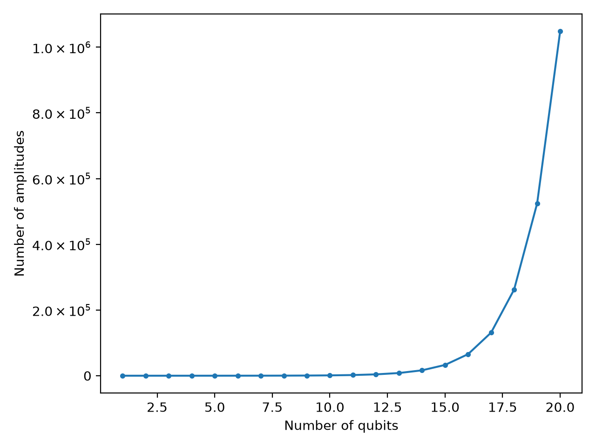
Fig. 38 Number of amplitudes vs. number of qubits.#
Statevector Simulators#
Statevector Simulator
A statevector simulator represents the full quantum state as a single complex vector of length \(2^n\).
The statevector simulator is the default simulator in almost all SDKs.
The number of quantum amplitudes grows exponentially with the number of qubits. Simulating more than 40 qubits requires supercomputer-scale distributed memory.
Other examples of quantum simulators:
Mixed state simulators
Tensor network simulators
Matrix product state simulators
Decision diagram simulators
Montecarlo wavefunction simulators
Path integral simulators
Sparse state simulators